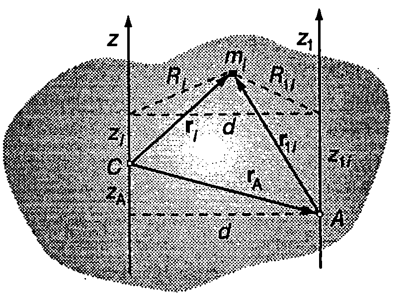
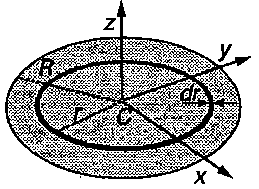
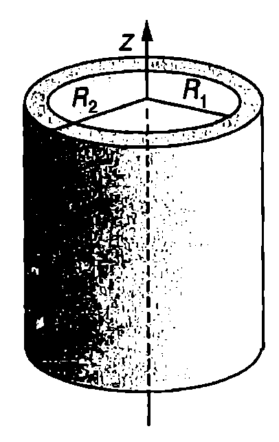
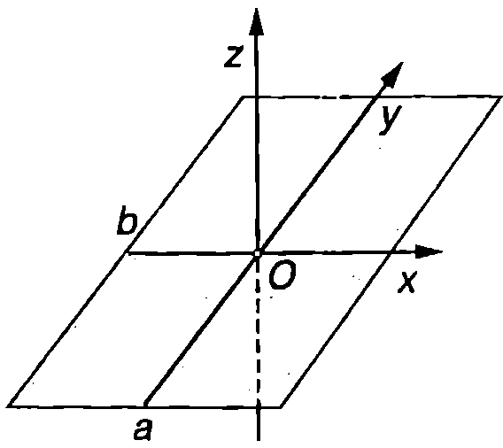

При въртенето на твърдо тяло инерчният момент спрямо ос е важна динамична характеристика. Той играе същата роля, както масата при постъпателното движение: инерчният момент е мярка за инертността на телата при въртеливо движение.
В общия случай на нееднородно тяло с неправилна форма определянето на инерчните му моменти спрямо зададени оси на въртене е сложна задача, която се решава експериментално или с помощта на числени методи. За редица симетрични еднородни тела обаче инерчните моменти спрямо техните оси на симетрия могат лесно да се пресметнат аналитично. Преди да направим подобни пресмятания ще се спрем на две полезни съотношения, известни като теореми за успоредните и за перпендикулярните оси.
Теорема за успоредните оси (теорема на Щайнер)
Теорема. Инерчният момент $I$ на твърдо тяло спрямо произволна ос на въртене е равен на сумата от инерчния момент на тялото спрямо ос, успоредна на дадена та и преминаваща през неговия център на масите $C$, и произведението на масата $m$ на тялото по квадрата на разстоянието $d$ между двете оси $$I = I_C + md^2. $$ Доказателство. Нека $C$ е центърът на масите на твърдо тяло, а $A$ е произволна точка, която може да се намира и извън тялото. $z$ и $z_1$ са две успоредни оси, които преминават през точките $C$ и $A$ (Фиг. \ref{fig:16.1}). Радиус-векторите $\vec r_i$ и $\vec r_{1i}$ на произволен малък елемент (материална точка) с маса $m_i$ от твърдото тяло спрямо точките $C$ и $A$ са свързани със съотношението (Фиг. \ref{fig:16.1}) $$\vec r_{1i} = \vec r_i - \vec r_A,$$ където $\vec r_A$ е радиус-векторът на точка $A$ спрямо началото $C$. Повдигаме двете страни на това векторно равенство на квадрат: $$r_{1i}^2 = r_i^2 + r_A^2 - 2 \vec r_i \cdot \vec r_A $$

`Фиг. 16.1`
Да означим с $z_{1i}$, $z_i$ и $z_A$ проекциите на радиус-векторите $\vec r_{1i}$, $\vec r_i$ и $r_AA$ върху двете оси, а с $R_{1i}$ и $R_i$ - разстоянията от разглеждания елемент с маса $m_i$, до двете оси (отсечката $R_{1i}$ е перпендикулярна на оста $z_1$, а $R_i$ е перпендикулярна на оста $z$). От питагоровата теорема следва, че (Фиг. \ref{fig:16.1}): $$r_{1i}^2 = R_{1i}^2 + z_{1i}^2;\ r_i^2 = R_i^2 + z_i^2.$$
От Фиг. \ref{fig:16.1} се вижда, че $z_{1i} = z_i - z_A$ (отчетено е, че в случая $z_A < 0$) и $r_A^2 = z_A^2 + d^2$, където $d$ е разстоянието между двете оси. След заместване на квадратите на трите радиус-вектора в \eqref{eq:16.2} и елементарни преобразования се получава $$R_{1i}^2 = R_i^2 + d^2 + 2 z_A z_i - 2 \vec r_A \cdot \vec r_i. $$ Умножаваме двете страни на уравнение \eqref{eq:16.3} по масата $m_i$ на малкия елемент и сумираме всички аналогични равенства, които могат да се запишат за всички малки елементи, на които мислено сме разделили твърдото тяло. Получаваме $$\begin{aligned} &\sum m_i R_{1i}^2 = \sum m_i R_i^2 + d^2 \sum m_i +\ &+2 z_A \sum m_i z_i - 2 \vec r_A \cdot \sum m_i \vec r_i. \end{aligned} $$ По определение $\sum m_i z_i = mz_C$, където $m = \sum m_i$ е масата на твърдото тяло, а $z_C$ е проекцията на радиус-вектора $\vec r_C$ на центъра на масите върху оста $z$. Също така $\sum m_i \vec r_i = m\vec r_c$. Тъй като началото $C$ съвпада с центъра на масите на твърдото тяло, то $\vec r_c = 0$ и $z_C = 0$. Следователно последните два члена в уравнение \eqref{eq:16.4} също са равни на нула. Тогава уравнение \eqref{eq:16.4} добива вида $$I = I_C + md^2, $$ където $I = \sum m_i R_{1i}^2$ е инерчният момент на тялото спрямо оста $z_1$, а $I_C = \sum m_i R_i^2$ е инерчният момент спрямо оста $z$, която е успоредна на $z_1$ и преминава през центъра на масите $C$ на твърдото тяло. С това теоремата на Щайнер е доказана.
Теорема за перпендикулярните оси
Теорема. Сумата от инерчните моменти на твърдо тяло спрямо три взаимно перпендикулярни оси, пресичащи се в една точка $O$, е равна на удвоената сума от произведенията на масите $m_i$ на материалните точки, от които се състои тялото, по квадрата на техните разстояния $r_i$ до точка $O$ $$I_x + I_y + I_z = 2\sum m_i r_i^2. $$
Доказателство. Избираме трите оси за координатни оси на правоъгълна декартова координатна система. Разглеждаме произволна материална точка от тялото с маса $m_i$ и радиус-вектор $\vec r_i$. Записваме квадратите на разстоянията от точката до координатните оси (Фиг. \ref{fig:16.2}) $$R_{ix}^2 = y_i^2 + z_i^2;\ R_{iy}^2 = z_i^2+x_i^2;\ R_{iz}^2 = x_i^2+y_i^2.$$
Събираме трите равенства $$R_{ix}^2+R_{iy}^2+R_{iz}^2 = 2(x_i^2 + y_i^2 +z_i^2) = 2r_i^2,$$ умножаваме двете страни на полученото равенство по масата $m_i$ на материалната точка и сумираме аналогичните равенства за всички материални точки, от които е изградено твърдото тяло. Получаваме $$\sum m_i R_{ix}^2+\sum m_i R_{iy}^2+\sum m_i R_{iz}^2 = I_x + I_y + I_z = 2\sum m_i r_i^2,$$

`Фиг. 16.2`
където $$I_x = \sum m_i R_{ix}^2;\ I_y = \sum m_i R_{iy}^2;\ I_z = \sum m_i R_{iz}^2$$ са инерчните моменти на тялото съответно спрямо осите $x$, $y$ и $z$. С това теоремата за перпендикулярните оси е доказана.
Специален интерес представлява частният случай на плоско тяло, т.е. тяло, чиято маса е разпределена в една равнина (например тънка пластинка). Можем да изберем осите $x$ и $y$ да лежат в равнината на тялото (Фиг. \ref{fig:16.3}). Тогава за всички точки от тялото $z = 0$ и

`Фиг. 16.3`
$$\sum m_i r_i^2 = \sum m_i(x_i^2 + y_i^2) = \sum m_iR_{iz}^2 = I_z. $$ От уравнения \eqref{eq:16.6} и \eqref{eq:16.7} получаваме $$I_x + I_y = I_z. $$ Уравнение \eqref{eq:16.8} изразява теоремата за перпендикулярните оси, приложена към плоско тяло: сумата от инерчните моменти на плоско тяло спрямо две взаимно перпендикулярни оси, лежащи в равнината на тялото, е равна на инерчния момент спрямо ос, перпендикулярна на тялото, при условие, че трите оси се пресичат в една точка.
Сега ще преминем към пресмятане на инерчните моменти на някои симетрични тела.
Инерчен момент на тънък пръстен
Най-напред ще пресметнем инерчния момент на тънък еднороден пръстен с маса $m$ и радиус $R$ спрямо три взаимно перпендикулярни оси, минаващи през центъра на масите му $C$. Оста $z$, която е перпендикулярна на равнината на пръстена, е ос на аксиална (ротационна) симетрия - при завъртане на пръстена около оста $z$ на произволен ъгъл пръстенът съвпада сам със себе си. Другите две оси $x$ и $y$ лежат в равнината на пръстена (Фиг. \ref{fig:16.4}). Тъй като всички точки от пръстена са на еднакво разстояние от оста $z$, инерчният му момент спрямо нея е $$I_z = mR^2 $$

`Фиг. 16.4`

`Фиг. 16.5`
От симетрията следва, че за еднороден пръстен инерчните моменти спрямо осите $x$ и $y$ са равни: 1 = 1. Прилагаме теоремата за перпендикулярните оси \eqref{eq:16.8} и определяме $$I_x = I_y = \frac{1}{2} I_z = \frac{1}{2} mR^2 $$ Инерчен момент на диск
Ще направим аналогични пресмятания за тънък диск с маса $m$ и радиус $R$. За разлика от пръстена, отделните малки елементи (материални точки), от които е съставен дискът, се намират на различни разстояния от оста на симетрия $z$. Затова ще разделим мислено диска на голям брой тънки пръстени. На Фиг. \ref{fig:16.5} е показан един от тях. Масата на пръстена е
$$dm = \frac{m}{\pi R^2}2\pi r dr$$
където $m/\pi R^2$ е масата на единица площ от диска, а $2\pi r dr$ — площта на разглеждания пръстен. Съгласно с уравнение \eqref{eq:16.9} инерчният момент на пръстена е
$$dI_z = r^2 dm = \frac{2m}{R^2} r^3 dr$$
Инерчният момент на диска е сума от инерчните моменти на всички пръстени $$
I_z = \int_0^R \frac{2m}{R^2} r^3 dr = \frac{1}{2} mR^2 $$ Поради симетрията, инерчните моменти спрямо осите $x$ и $y$ са равни. Пренебрегваме дебелината на диска и го разглеждаме като тяло, чиято маса е разпределена в една равнина. Тогава от теоремата за перпендикулярните оси \eqref{eq:16.8} следва, че $$
I_x = I_y = \frac{1}{2} I_z = \frac{1}{4} mR^2. $$
Пример 16.1
Пресметнете инерчния момент на еднороден цилиндър с маса $m$, радиус $R$ и дължина $L$ спрямо три взаимно перпендикулярни оси, минаващи през неговия център на масите (Фиг. \ref{fig:16.6}а). \end{psexample}
Решение
Разпределението на масата на цилиндъра спрямо оста му $z$ е същото, както при диск. Затова инерчният момент $I_z$ се изразява с формула \eqref{eq:16.11}: $I_z = mR^2/2$. От симетрията следва, че инерчните моменти спрямо перпендикулярните оси $x$ и $y$ са еднакви: $I_x = I_y$. За да пресметнем $I_x,$ разделяме мислено цилиндъра на голям брой тънки дискове. На Фиг. \ref{fig:16.6}б е показан един от тях. Масата му е $\displaystyle dm=\frac{m}{L}dz$. Инерчният му момент спрямо оста $x$ определяме с помощта на теоремата на Щайнер
$$dI_x = \frac{1}{4}R^2dm+ z^2dm,$$
където първият член е равен на инерчния момент на диска спрямо ос, успоредна на оста $x$, която минава през центъра на масите на диска. Разстоянието между двете оси е $z$ (Фиг. \ref{fig:16.6}б). След заместване на $dm$ се получава
$$dI_x = (\frac{1}{4}R^2 +z^2)\frac{m}{L}dz.$$
Инерчният момент на цилиндъра е сума (интеграл) от инерчните моменти на отделните пръстени $$
I_x = \int_{-\frac{1}{2}L}^{\frac{1}{2}L} (\frac{1}{4}R^2 + z^2)\frac{m}{L} dz = m \left(\frac{1}{12} L^2 + \frac{1}{4} R^2\right) $$
В частния случай на дълга цилиндрична пръчка, за която $L\gg R$, вторият член в дясната страна на равенство \eqref{eq:16.13} може да се пренебрегне и за инерчния момент на пръчката се получава $$
I_x = \frac{1}{12} mL^2 $$

`Фиг. 16.6`
Инерчен момент на тънка сферична обвивка
Ще определим инерчните моменти на тънка еднородна сферична обвивка с маса $m$ и радиус $R$ спрямо три взаимно перпендикулярни оси $x$, $y$ и $z$, минаващи през центъра на сферата. Ще използваме теоремата за перпендикулярните оси \eqref{eq:16.6}. Всички малки елементи (материални точки), от които можем да смятаме че е съставена сферата, се намират на еднакви разстояния $R$ от нейния център. Затова
$$\sum m_ir_i^2 = R^2 \sum m_i = R^2m$$
и уравнение \eqref{eq:16.6} добива вида
$$I_x + I_y + I_z = 2mR^2.$$
От сферичната симетрия следва, че трите инерчни момента са равни. Следователно $$
I_x = I_y = I_z = \frac{2}{3} mR^2 $$ Инерчен радиус
Често за характеризиране на динамичните свойства на телата при въртене около неподвижна ос $z$ се използва величината инерчен радиус. Инерчният радиус $\rho_z$ на твърдо тяло спрямо дадена ос на въртене $z$ има размерност на дължина и се въвежда чрез равенството $$
I_z = m\rho_z^2, $$ където $m$ е масата на тялото, а $I_z$ е инерчният му момент спрямо оста $z$.
Задачи
-
Пресметнете инерчния момент на ротор с маса $m = 5$ kg и инерчен радиус $\rho_z = 6$ cm.
-
Определете инерчния момент на: а) еднороден диск с маса $m$ и радиус $R$ спрямо ос, перпендикулярна на равнината на диска, минаваща през точка от периферията му; б) тънка еднородна цилиндрична пръчка с маса $m$ и дължина $L$ спрямо ос, перпендикулярна на пръчката, минаваща през единия и край; в) тънка еднородна сферична обвивка с маса $m$ и радиус $R$ спрямо ос, която се допира до повърхността на обвивката.
Указание. Използвайте теоремата на Щайнер.
- Докажете, че инерчният момент на плътно еднородно кълбо с маса $m$ и радиус $R$ спрямо ос, минаваща през центъра на кълбото, се изразява с формулата $\displaystyle I = \frac{2}{5} mR^2$.
Указание. Разделете кълбото на тънки сферични слоеве. Определете инерчния момент на слой с радиус $r$ и дебелина $dr$ и интегрирайте в граници от $r=0$ до $r=R$.
- Докажете, че инерчният момент спрямо централната ос на кух цилиндър, направен от еднородно вещество, е $I = \frac{1}{2} m(R_1^2+R_2^2)$, където $m$ е масата на цилиндъра, $R_1$ е вътрешният му радиус, а $R_2$ е външният му радиус (Фиг. \ref{fig:16.7}).
Указание. Използвайте същия подход, както при определянето на инерчния момент на еднороден диск: разделете цилиндъра на тънки цилиндрични слоеве, определете инерчния момент $dI$ на слой с радиус $r$ и дебелина $dr$ и интегрирайте в граници от $r = R_1$ до $r=R_2$.
- Определете инерчните моменти $I_x$, $I_y$ и $I_z$ на тънка еднородна правоъгълна пластинка с маса $m$, дължина $a$ и ширина $b$ (Фиг. \ref{fig:16.8}). Осите $x$, $y$ и $z$ са взаимно перпендикулярни и се пресичат в центъра на масите $C$ на пластинката. Оста $z$ е перпендикулярна на пластинката.
Указание. Използвайте формулата за инерчен момент на тънка пръчка \eqref{eq:16.14}, за да определите $I_x$ и $I_y$. (Ако например мислено сплескаме пластинката в направление на оста $y$, тя се превръща в тънка пръчка с дължина $a$, която има същия инерчен момент $I_y$, както пластинката.) След това приложете теоремата за перпендикулярните оси.
- Пресметнете инерчния момент на тънка еднородна квадратна пластинка с маса $m$ и страна $a$ спрямо диагонала на квадрата.
Указание. Двата диагонала на квадрата са взаимно перпендикулярни. Използвайте резултата от зад.5 и теоремата за перпендикулярните оси.

`Фиг. 16.7`

`Фиг. 16.8`